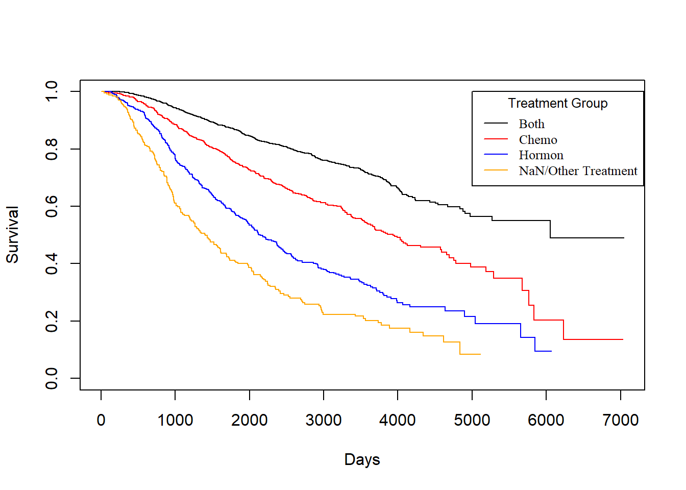
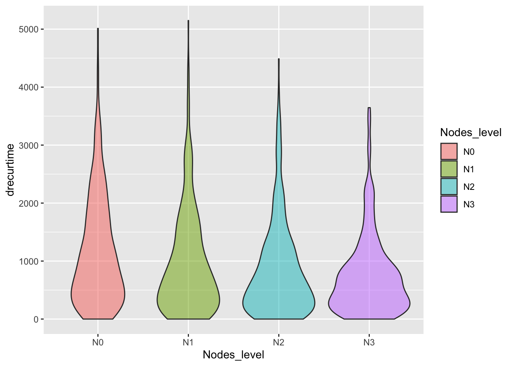
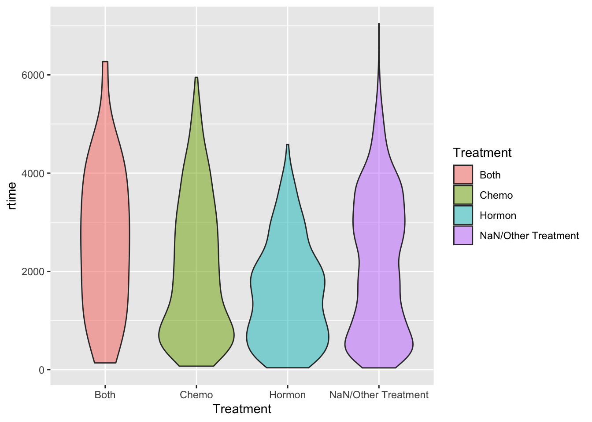
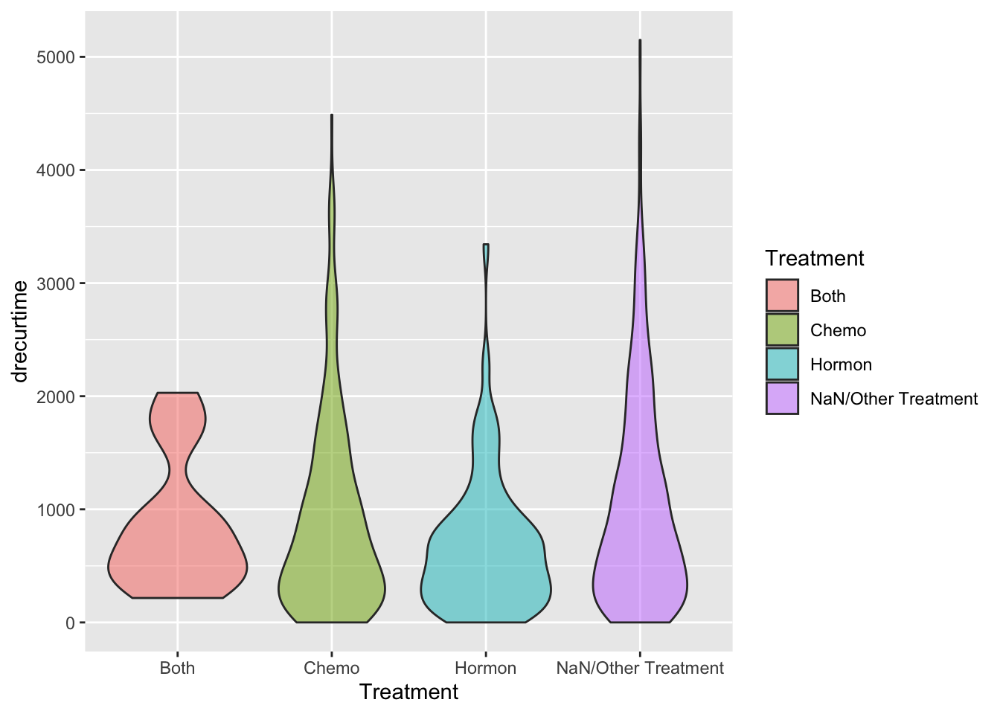
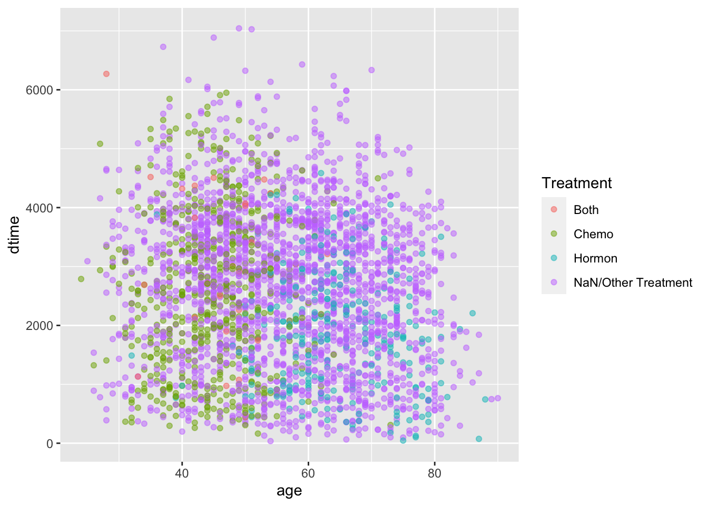
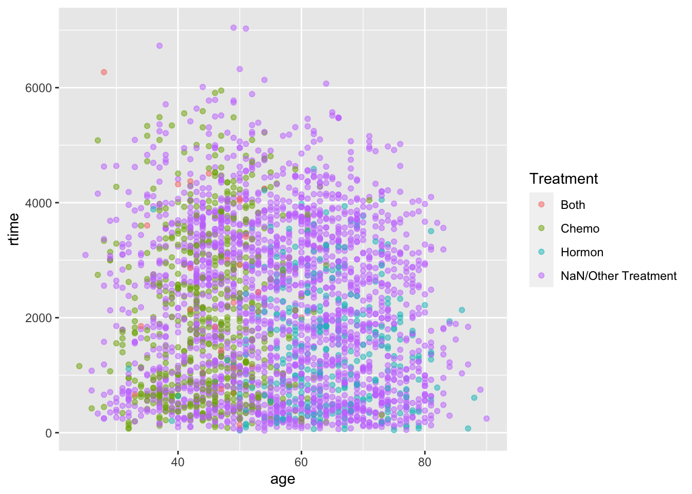

2.3 Data visualizations
size v.s. grade

grade v.s. nodes
#{r} ggplot(data = rotterdam, aes(x=as.factor(grade), y=nodes, fill=as.factor(grade))) + geom_violin() + scale_fill_viridis(discrete = TRUE, alpha=0.6) + geom_jitter(color="black", size=0.4, alpha=0.9) + theme_ipsum() + theme( legend.position="none", plot.title = element_text(size=11) ) #
size v.s. nodes
#{r, warning = FALSE} ggplot(data = rotterdam, aes(x=size, y=nodes, fill=size)) + geom_violin() + scale_fill_viridis(discrete = TRUE, alpha=0.6) + geom_jitter(color="black", size=0.4, alpha=0.9) + theme_ipsum() + theme( legend.position="none", plot.title = element_text(size=11) # )
As we were examining through the data, we found that upon the chemo variable and the hormon variable, there are instances where patients gets both therapy or neither. So in order to explore the relationship between treatment and survival, we introduce a new variable called Treatment, using the chemo and hormon variables.
rotterdam <- rotterdam %>%
mutate(Treatment = ifelse(chemo == 1 & hormon == 0, "Chemo", ifelse(chemo == 0 & hormon == 1, "Hormon", ifelse(chemo == 1 & hormon == 1, "Both", "NaN/Other Treatment"))))A very important criterion in analysis about cancer is the 5-year survival rate. In order to examine that, we introduce a new variable called 5_year_survival, which indicates 1 if a patients survival time is larger than 5 years and 0 vice versa.
rotterdam <- rotterdam %>%
mutate(dtime_Years = floor(dtime/365)) %>%
mutate(`5_year_survival` = ifelse(dtime_Years >= 5, 1, 0))Now we want to calculate the 5-year survival rate for the population in the dataset.
## # A tibble: 2 x 2
## `5_year_survival` number
## <dbl> <int>
## 1 0 898
## 2 1 2084## [1] 0.6988598And also the important 10-year survival rate.
rotterdam <- rotterdam %>%
mutate(dtime_Years = floor(dtime/365)) %>%
mutate(`10_year_survival` = ifelse(dtime_Years >= 10, 1, 0))Now we calculate the 10-year survival rate for the population in the dataset.
## # A tibble: 2 x 2
## `10_year_survival` number
## <dbl> <int>
## 1 0 2297
## 2 1 685## [1] 0.2297116## `stat_bin()` using `bins = 30`. Pick better value with `binwidth`.

ggplot(rotterdam,aes(x=pgr,fill=Treatment)) +
geom_density(alpha = 0.5) +
scale_fill_manual(values = c("blue","purple", "red", "yellow"))
ggplot(rotterdam,aes(x=er,fill=Treatment)) +
geom_density(alpha = 0.5) +
scale_fill_manual(values = c("blue","purple", "red", "yellow"))


